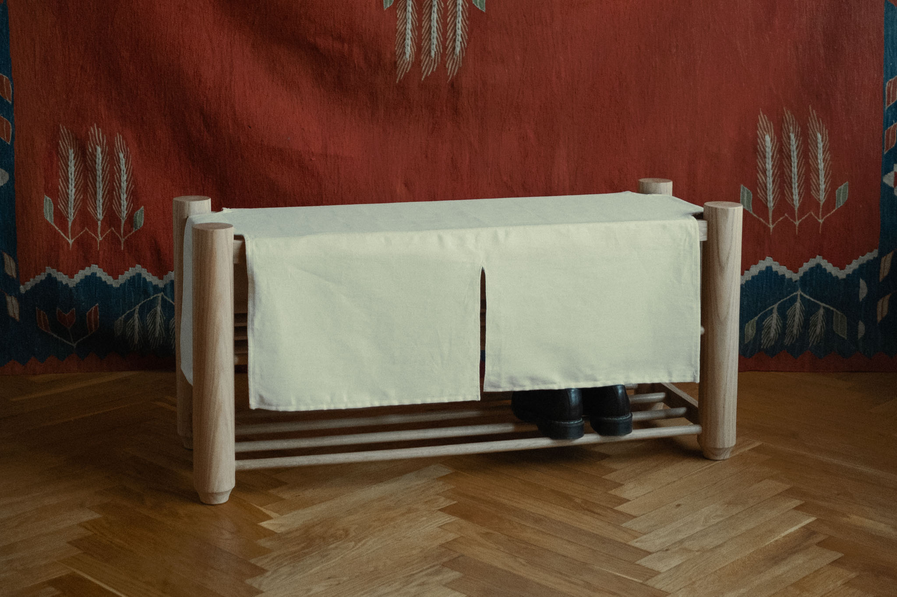

Hallway bench
A hallway bench built from solid oak, with a cotton canvas seat inspired by Japanese 'Noren' room dividers that allows you to tuck away shoes and other essentials, keeping your hallway tidy while ensuring easy access to your belongings.




Starting from rough lumber, the legs were cut and planed square before being turned on a lathe into shape.


The construction uses no screws or nails—only a variety of mortise and tenon joints.